Sublime
提取youtube网页返回的html中包含的子页面的url地址
比如，用：
"url":"/watch\?v=[\w\-]{11}?\\u0026list=[\w\-]+\\u0026index=\d+"
可以从一堆的js中的script的值中：
{"webCommandMetadata":{"url":"/watch?v=23t1f8d2ISs\u0026list=PLHOR8x-IicVJDAmJWZmJ-IMu1x3lTAld5\u0026index=1",”webPageType"
{"webCommandMetadata":{"url":"/watch?v=au7Nkr-5MA8\u0026list=PLHOR8x-IicVJDAmJWZmJ-IMu1x3lTAld5\u0026index=14",”webPageType"
搜索出所要的内容，此处有77个符合需要的内容：1/77
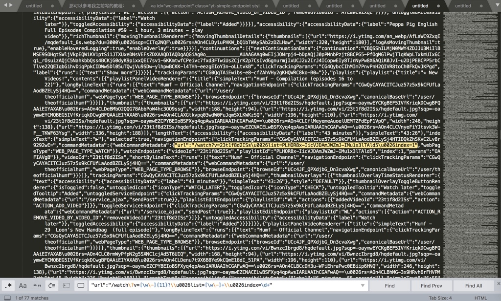
点击Find，继续向下找，比如找到第14个：14/77
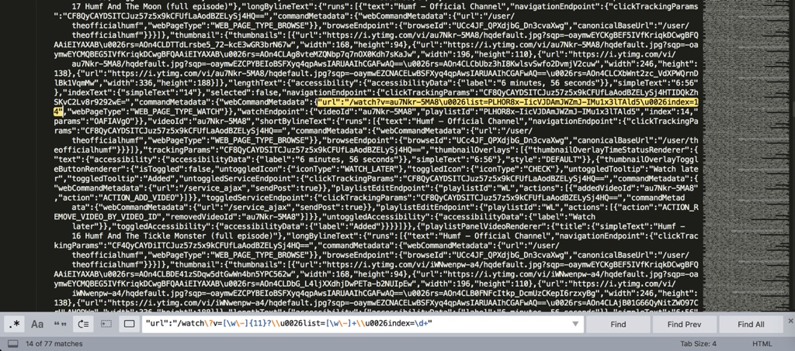
另外，进一步的举例：
此处，对应着页面上的其实只是希望找到66个地址就可以了：
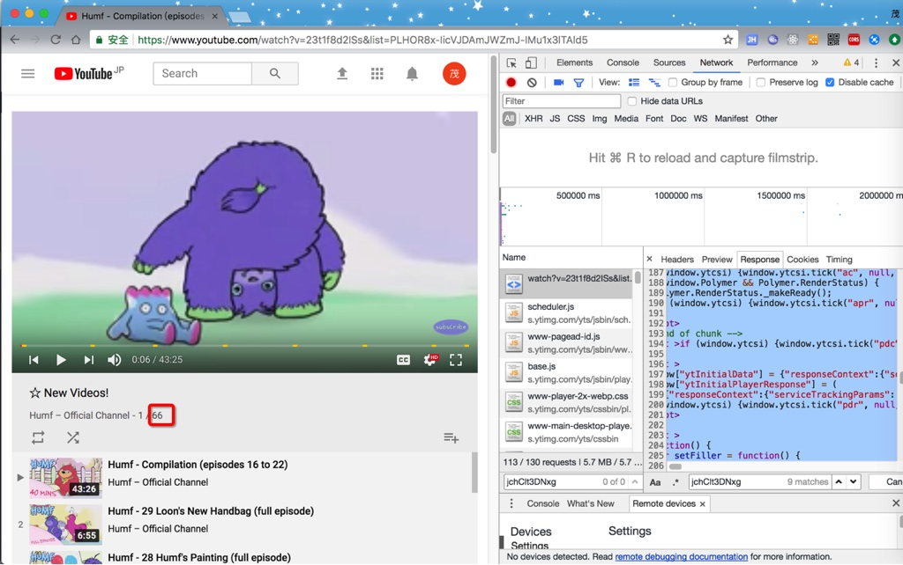
但是此处找到77个，多出11个，则是由于：
此处的js的变量的值中，包含了不需要的额外的11个
所以此时，由于没法方便的从字符串中区别开来，不好去掉另外那11个，则只能：
想办法拿到js的变量值，然后通过转换为json，然后再去获取json对象中的值，即可准确的得到所需要的值。
所以此处，又可以接着通过正则去先得到js的变量的值：
用正则：
window\["ytInitialData"\]\s*=\s*
;\s+window\["ytInitialPlayerResponse"\]
从：
<script >
window["ytInitialData"] = {"responseContext”:
...
xqmOCnbELAge-VPNjlN1SqHurYg"}};
window["ytInitialPlayerResponse"] = (
中，搜索到所要的内容：
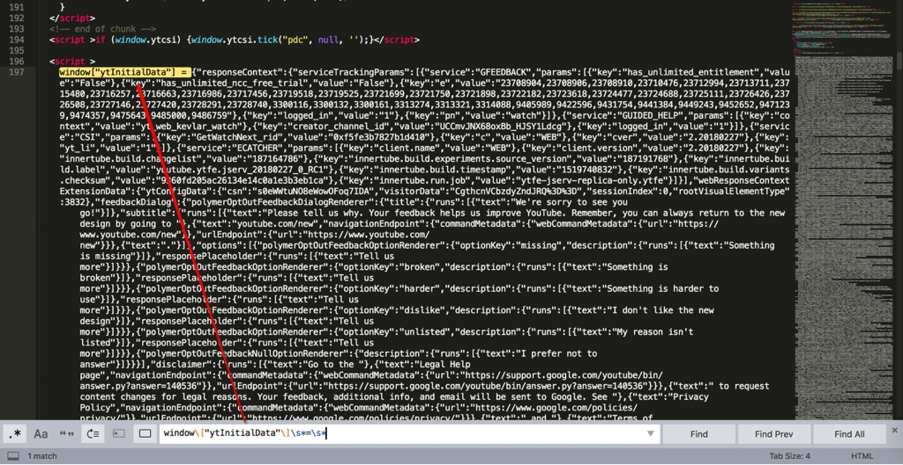
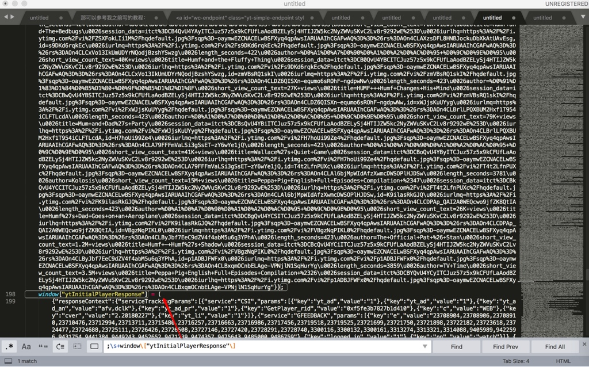
而首尾的正则之间的内容，就是需要找的js的变量的值，是个json
对应着写个完整的正则：
window\["ytInitialData"\]\s*=\s*(.+?);\s+window\["ytInitialPlayerResponse"\]
就可以匹配到这段完整的内容了：
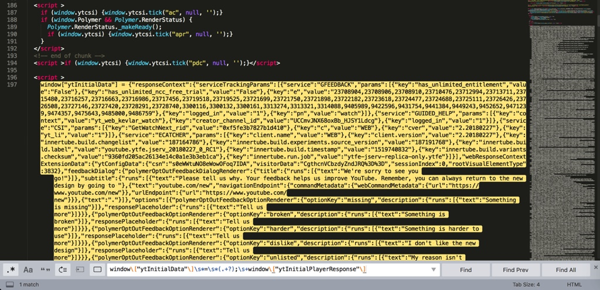
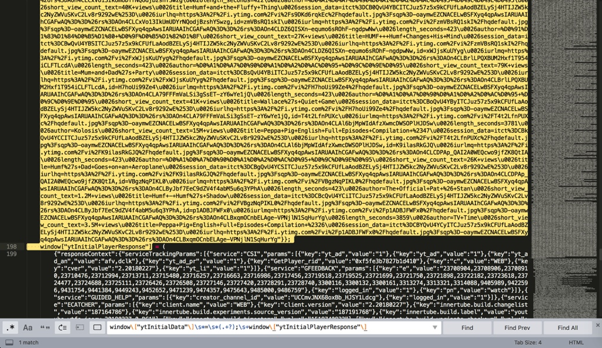
后续就可以通过解析json去精确获取所要的url的值了。
比如第12个url：
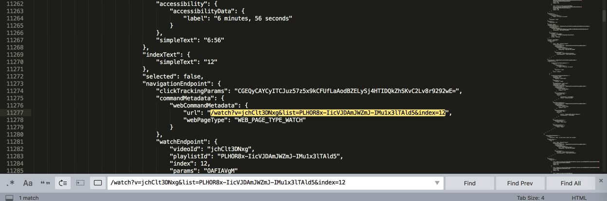
由此实现了：
根据自己的实际的（业务）需求，通过充分利用正则表达式，获取想要的符合特定某一规则的内容。
html中提取出浙江省的每个市到Xmind中
<div class="menu transition visible" tabindex="-1" style="display: block !important;"><div class="item selected" data-value="330100">杭州市</div><div class="item" data-value="330200">宁波市</div><div class="item" data-value="330300">温州市</div><div class="item" data-value="330400">嘉兴市</div><div class="item" data-value="330500">湖州市</div><div class="item" data-value="330600">绍兴市</div><div class="item" data-value="330700">金华市</div><div class="item" data-value="330800">衢州市</div><div class="item" data-value="330900">舟山市</div><div class="item" data-value="331000">台州市</div><div class="item" data-value="331100">丽水市</div></div>
希望提取出每个市
正则写法：
- 查找Find：
<div.*?data-value="\d+">(\S+?)</div> - 替换Replace：
$1\r\n
点击Replace All：
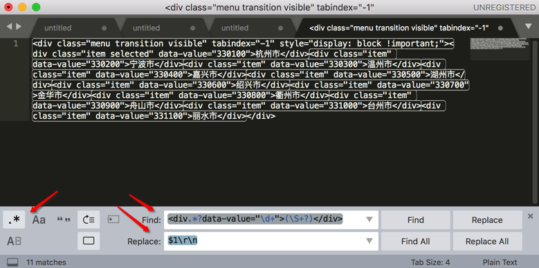
替换成：
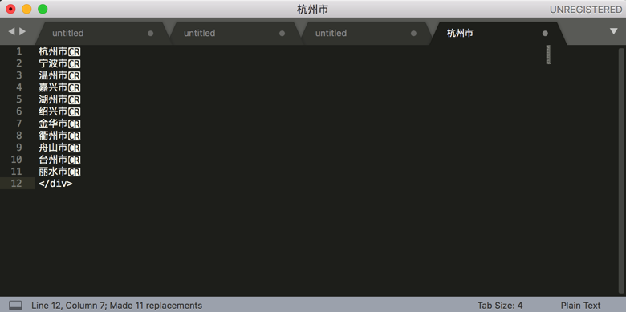
忽略掉最后的</div>，拷贝出来，即可得到我要的所有的市：
杭州市
宁波市
温州市
嘉兴市
湖州市
绍兴市
金华市
衢州市
舟山市
台州市
丽水市
->
如此继续重复此步骤，直到把网页中的内容：
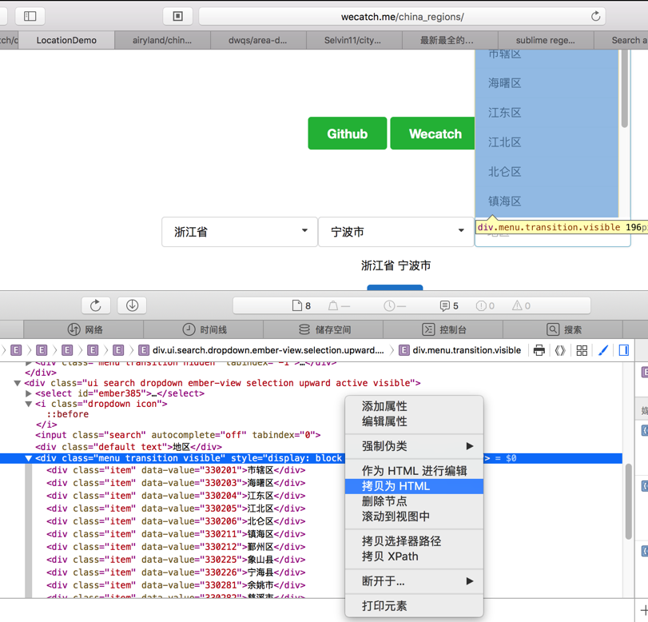
分多次，但是是批量的：
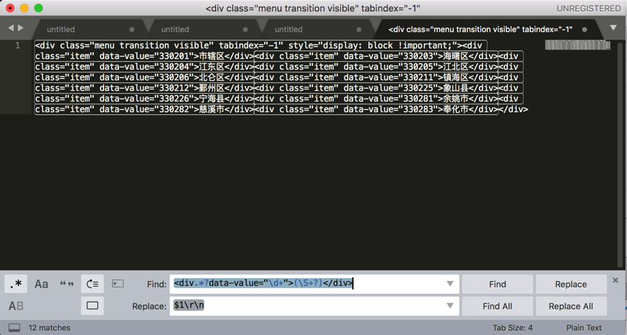
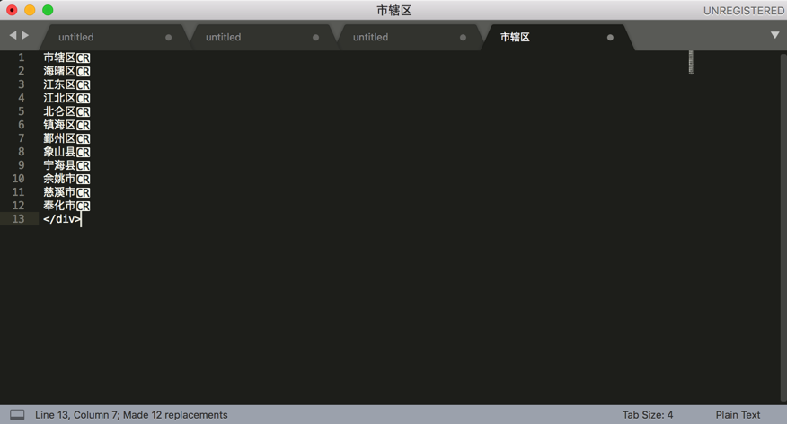
全部都整理到Xmind中：
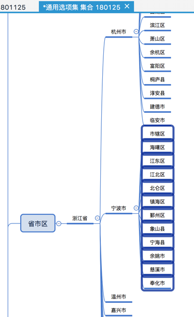
就不用一个个拷贝，一个个粘贴了 -》 从而提高工作效率。